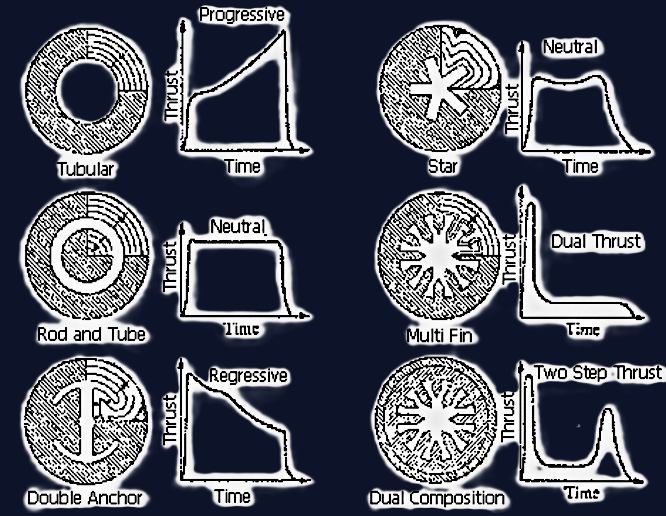

Rocket Theory
Key concepts and equations for rocket design, propulsion, and performance. The basis of solid propulsion — essential knowledge for any rocket propulsion engineer, and always worth a refresh.
Rocket Design and Performance
The Tsiolkovsky Rocket Equation
The ideal velocity gain imparted by a propulsion system is described by the Tsiolkovsky Rocket Equation. It relates the change in velocity to the mass ratio before and after the burn.
$$\Delta V_{id}=g_{e}I_{sp}\ln\left(\frac{m_{o}}{m_{f}}\right)=\Delta V+\Delta V_{g}+\Delta V_{D}+\Delta V_{S}$$
- $\Delta V_{id}$: Ideal velocity gain.
- $\Delta V$: Mission velocity requirement.
- $\Delta V_{g}$: Gravity losses — $\int_{0}^{t} g(t)\, dt$.
- $\Delta V_{D}$: Drag losses — $\int_{0}^{t} \frac{D}{m}\, dt$.
- $\Delta V_{S}$: Steering losses.
- $m_{o}$: Initial mass. $m_{f}$: Final mass.
First-order estimates often drop the complex terms. Did you know we need 11.2 km/s to escape Earth's gravity?
Structural Efficiency & Mass Ratios
Structural efficiency is measured by the propellant mass fraction $\xi$. We want it as close to 1 as possible.
$$\xi = \frac{m_{p}}{m_{p} + m_{i}}$$
- $m_{p}$: Propellant mass. $m_{i}$: Inert (structural) mass. $m_{pl}$: Payload mass.
The mass ratio for any stage $i$:
$$MR_{i}=\frac{m_{o}}{m_{f}}=\frac{m_{pl}+m_{p}+m_{i}}{m_{pl}+m_{i}}$$
From this, the propellant mass needed for any stage:
$$m_{p_{i}}=m_{pl_{i}}\frac{MR_{i}-1}{MR_{i}-1/\xi_{i}}$$
Rocket Propulsion Equations
Thrust Equation
Derived via a control-volume approach on the Navier-Stokes equations:
$$T=\dot{m}_{e}U_{e}+(P_{e}-P_{a})A_{e}$$
- $\dot{m}_{e}$: Mass flow rate. $U_{e}$: Exhaust velocity.
- $P_{e}$: Exit pressure. $P_{a}$: Ambient pressure. $A_{e}$: Exit area.
Maximum efficiency at $P_e = P_a$ (perfectly expanded). In vacuum ($P_a = 0$) thrust is maximised.
Specific Impulse
$I_{sp}$ is the key figure of merit for comparing engine efficiency:
$$I_{sp}=\frac{T}{\dot{m}g_{e}}$$
Higher $I_{sp}$ → more efficient engine. It relates thrust to propellant consumption.
Characteristic Velocity
$c^{*}$ measures propellant performance and depends on propellant composition:
$$c^{*}=\sqrt{\frac{g_{e}RT_{c}}{\gamma}}\left(\frac{2}{\gamma+1}\right)^{\frac{\gamma+1}{2(\gamma-1)}}$$
The mass flow rate is related to $c^{*}$ by: $\dot{m} = \frac{P_{c}A_{t}}{c^{*}}$
Solid Rocket Motors
Solid motors combine oxidizer and fuel into a single propellant grain using a binder. The burning rate follows Vieille's law:
$$\dot{r} = aP_{c}^{n}$$
At steady-state (choked nozzle, no mass accumulation), chamber pressure is:
$$P_{c}=\left[\frac{a\rho_{p}A_{s}c^{*}}{g_{e}A_{t}}\right]^{\frac{1}{1-n}}$$
For a given geometry and fuel, pressure history depends only on exposed burning surface $A_s$. The grain geometry therefore determines the thrust profile:

Image credit: nakka-rocketry.net — highly recommended resource!
Hybrid Rockets
Hybrid rockets pair a solid fuel with a liquid oxidizer. The oxidizer flow rate is controllable, making the regression rate a function of oxidizer mass flux:
$$\dot{r} = aG_{ox}^{n}, \quad G_{ox} = \frac{\dot{m}_{ox}}{A_{p}}$$
where $A_{p}$ is the port area. This controllability gives hybrids a safety and throttling advantage over solid motors.
Liquid Rocket Engines
Liquid rockets offer the largest controllability and thrust of any propulsion class — the go-to choice for orbital launchers.
Propellant Feeding Systems
- Cold Gas Thrusters: Compressed inert gas (e.g. N₂). Lowest thrust; used for attitude control.
- Pressure-Fed: High-pressure inert gas pushes propellants into the chamber. Simple and reliable but heavy tanks limit use to smaller engines.
- Pump-Fed: Turbopumps deliver propellant from low-pressure tanks. Lighter, higher performance — standard for high-thrust engines.
Engine Cycles: Open vs. Closed
- Open Cycle (Gas Generator): A bleed of propellant burns in a separate gas generator to drive turbopumps; exhaust is dumped overboard. Simple but slightly less efficient.
- Closed Cycle (Staged Combustion): All propellant routes back into the main chamber after driving turbopumps. More complex but more efficient — no propellant is wasted.
Closed-Cycle Variants
- Fuel-Rich Staged Combustion: Preburner runs fuel-rich to drive turbines; exhaust completes combustion in the main chamber. Very high efficiency and chamber pressure, but risk of carbon deposits.
- Oxidizer-Rich Staged Combustion: Oxygen-rich preburner drives turbines. Avoids carbon issues but creates an extremely oxidizing environment requiring exotic materials. Higher explosion risk.
- Full-Flow Staged Combustion (FFSC): Two preburners (fuel-rich + oxidizer-rich) route all propellant through turbines before entering the main chamber. Highest theoretical efficiency, very high chamber pressure, longer turbomachinery life — but the most complex design. Used in SpaceX Raptor.